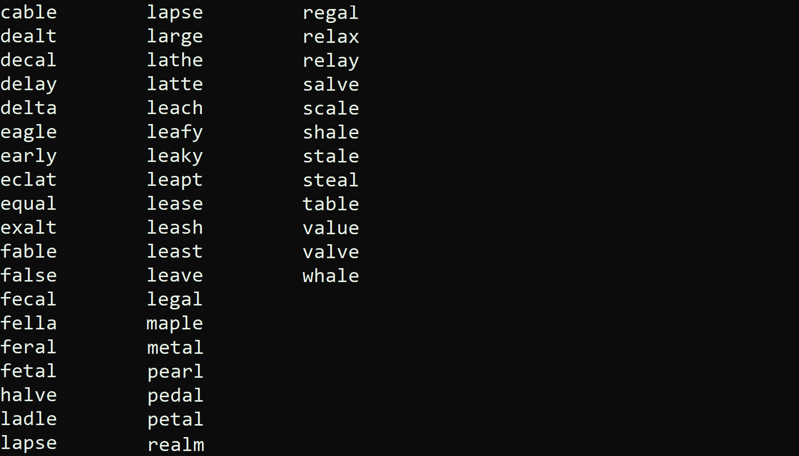

Class: CSCI 301 - Survey of Scripting Languages
Grade: 100/100
Language(s): Shell
This Wordle Helper project, written in shell scripting, assists players in narrowing down possible Wordle answers based on past guesses. By processing a word list through regular expressions, it eliminates invalid options and refines potential solutions with each round of input.
The script uses user-provided feedback from Wordle guesses, including correct, misplaced, and rejected letters, to generate matching words dynamically. It builds complex filters to exclude or include specific characters and positions efficiently.
With each iteration, the helper reduces the list of possibilities, guiding players toward the correct answer. This tool demonstrates the practical application of regex in solving real-world puzzles.
To run the script, execute the following command into a Linux terminal:
./wordle.sh
To run the Wordle Helper, use a shell with Wordle.txt containing potential answers. Enter the provided grep commands in the file, updating them with feedback from your guesses. The script filters the word list, narrowing options until the correct answer is found.
To access the project's source code, please request access via email. Upon approval, a link to the GitHub repository will be provided. Explore the code to see the project's full functionality.
Access Repository